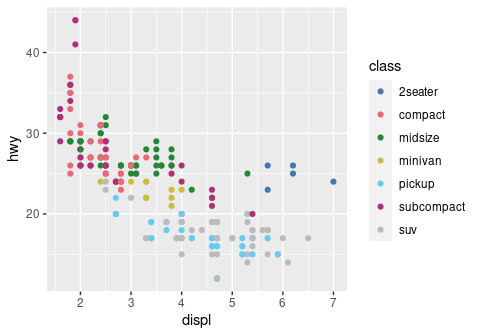
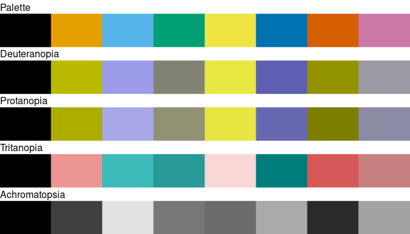

Overview
Color blindness affects a large number of individuals. When communicating scientific results colour palettes must therefore be carefully chosen to be accessible to all readers.
This R package provides an implementation of Okabe and Ito[1], Paul Tol[2] and Fabio Crameri[3] colour schemes. These schemes are ready for each type of data (qualitative, diverging or sequential), with colours that are distinct for all people, including colour-blind readers. This package also provides tools to simulate colour-blindness and to test how well the colours of any palette are identifiable. To simulate colour-blindness in production-ready R figures you may also be interested in the colorblindr package.
For specific uses, several scientific thematic schemes (geologic timescale, land cover, FAO soils, etc.) are implemented, but these colour schemes may not be colour-blind safe.
All these colour schemes are implemented for use with base R or ggplot2.
Installation
You can install the released version of khroma from CRAN:
install.packages("khroma")And the development version from GitHub with:
# install.packages("remotes")
remotes::install_github("tesselle/khroma")Usage
Colour palettes and scales
colour() returns a palette function that when called with a single integer argument returns a vector of colours.
# Paul Tol's bright colour scheme
bright <- colour("bright")If crayon is installed on your machine and if the crayon.enabled option is set to TRUE with options(), colours will be nicely printed in the console.

You can disable this feature by setting the crayon.enabled option to FALSE.
options(crayon.enabled = FALSE)
bright(7)
#> blue red green yellow cyan purple grey
#> "#4477AA" "#EE6677" "#228833" "#CCBB44" "#66CCEE" "#AA3377" "#BBBBBB"
#> attr(,"missing")
#> [1] NA
# Show the colour palette
plot_scheme(bright(7), colours = TRUE)
# Use with ggplot2
ggplot2::ggplot(data = mpg, mapping = aes(x = displ, y = hwy, colour = class)) +
ggplot2::geom_point() +
scale_colour_bright()
Diagnostic tools

Compute CIELAB distance metric
DeltaE <- compare(okabe(8))
round(DeltaE, 2)
#> black orange sky blue bluish green yellow blue vermilion
#> orange 64.74
#> sky blue 60.95 53.61
#> bluish green 50.51 42.87 34.69
#> yellow 88.42 21.72 57.53 38.04
#> blue 39.23 55.35 22.31 38.40 70.37
#> vermilion 49.36 22.24 52.27 54.36 43.71 49.62
#> reddish purple 53.11 49.01 45.51 63.45 62.54 41.11 37.02Simulate colour-blindness
plot_scheme_colourblind(okabe(8))
# ggplot2 default colour scheme
# (equally spaced hues around the colour wheel)
x <- scales::hue_pal()(8)
plot_scheme_colourblind(x)
Colour Schemes
Colour Schemes
Paul Tol and Fabio Crameri offer carefully chosen schemes, ready for each type of data, with colours that are:
- Distinct for all people, including colour-blind readers,
- Distinct from black and white,
- Distinct on screen and paper,
- Matching well together,
- Citable & reproducible.
See vignette("tol") and vignette("crameri") for a more complete overview.
Scientific colour schemes
The following scientific colour schemes are available:
- International Chronostratigraphic Chart;
- AVHRR Global Land Cover Classification;
- FAO Soil Reference Groups.
More will be added in future releases (suggestions are welcome).
Contributing
Please note that the khroma project is released with a Contributor Code of Conduct. By contributing to this project, you agree to abide by its terms.
[1] Okabe, M. & Ito, K. (2008). Color Universal Design (CUD): How to Make Figures and Presentations That Are Friendly to Colorblind People. URL: https://jfly.uni-koeln.de/color/.
[2] Tol, P. (2018). Colour Schemes. SRON. Technical Note No. SRON/EPS/TN/09-002. URL: https://personal.sron.nl/~pault/data/colourschemes.pdf.
[3] Crameri, F. (2018). Geodynamic diagnostics, scientific visualisation and StagLab 3.0. Geosci. Model Dev., 11, 2541-2562. https://doi.org/10.5194/gmd-11-2541-2018